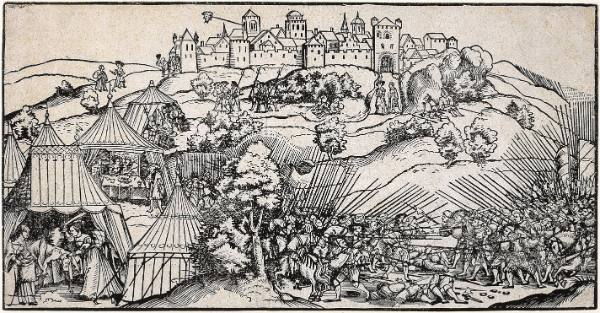

En Joachim, de hogepriester … schreef aan hen die in Betylua woonden … om hen de opdracht te geven de doorgangen in het heuvelland te bewaken, want via die doorgangen was er toegang tot Judea.
— Judith 4:6–7
Welkom
Wij zijn Betyluakerk
Wij zijn Betyluakerk, een kleine huisgemeente in regio Arnhem, Velp en omstreken. Bij ons staan familie, gemeenschap, gastvrijheid en onderlinge liefde centraal. Wij willen alles doen in navolging van het evangelie van Jezus Christus.
Wij danken onze naam aan de kleine stad "Betylua" uit het boek Judith, die de ingang tot Jerusalem moest verdedigen tegen het leger van de vijand. Zo zien wij het als onze missie om een schild te vormen rond onze gezinnen, gemeente en land, door op te komen voor Gods waarheid, wet en evangelie.
Wij zijn recent begonnen met het samen aanbidden op Zondag. Momenteel bidden wij om meer gelovigen (of zoekenden) te leren kennen om elkaar op te bouwen.
Waar wij voor staan
Geloofsbelijdenis
Wij zijn een nieuwe gemeente zonder aangestelde ouderlingen. Wel is er iemand die voorgaat en bijbelstudies voorbereid. De bijbelstudies reflecteren de theologie van de vroege kerk en reformatie. De leer die verkondigd wordt komt (op een aantal punten na) overeen met die van de zogehete "Savoy Declaration". Dat is een gereformeerde geloofsbeleidenis voor onafhankelijke gemeentes. De punten waarop wij afwijking betreffen met name de theologie van de Septuagint (Griekse vertaling van het oude testament), de deuterocanieke boeken en het avondmaal.
Praktisch
Bezoekers Informatie
De bijeenkomsten vinden plaats bij één van de gemeenteleden in de regio van Arnhem, Velp of Ede. Wij beginnen op zondag rond 10 uur met een kop koffie en gaan vervolgens over tot gezamelijk gebed, het acapella zingen van psalmen en een bijbelstudie. Na afloop eten we samen lunch en vieren tijdens de maaltijd het Heilig Avondmaal (de zogeheten "liefdesmaaltijd").
Gezien wij bij de leden thuis vergaderen is het adres niet publiek. Wij verzoeken u vriendelijk om via de mail (betyluakerk@gmail.com) contact op te nemen voor het bijwonen van de aanbidding of om kennis te maken.
Om te lezen
Bronnen
Overige geschriften die onze gemeente vormen.